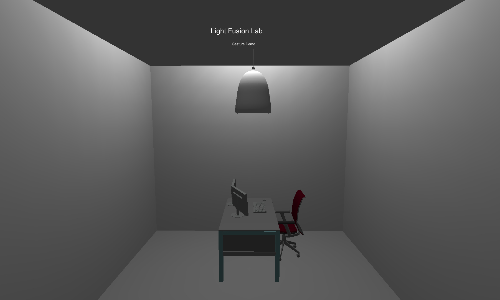

GestureDemo
Lichtinteraktion am Arbeitsplatz durch Gestensteuerung
Im Rahmen eines Praktikums im "Light-Fusion Lab" des Fraunhofer IAO entstand ein Gestaltungskonzept für eine Gestensteuerung mit einem automatischen Lichtsystem.
Das Ziel war die Entwicklung neuer und nutzerzentrierter Interaktionstechniken mit der Verwendung der schon heute vorkommenden Technik. Mithilfe der Leap Motion wurde ein digitaler und später ein physischer Prototyp des Konzeptes erstellt.
Dabei war die Schwierigkeit die Balance zwischen dem heutig technisch Machbaren und der Vision zu finden. So stand auf der einen Seite ein Konzept mit vielen Gesten, auf der anderen Seite, die Umsetzung und die Ergonomie der Gesten im realistischen Gebrauch.